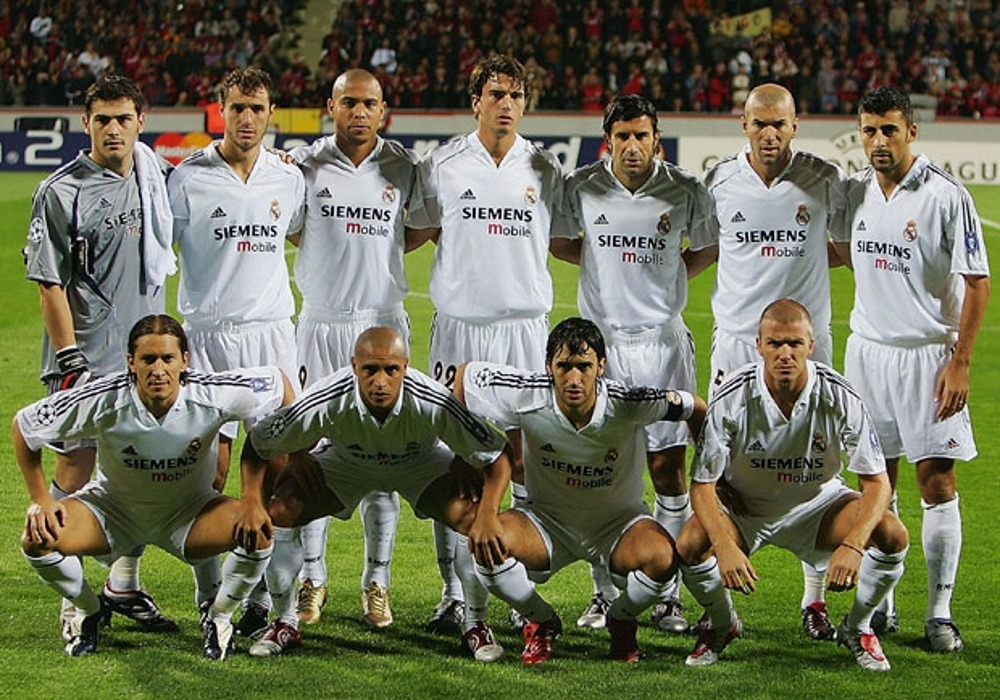
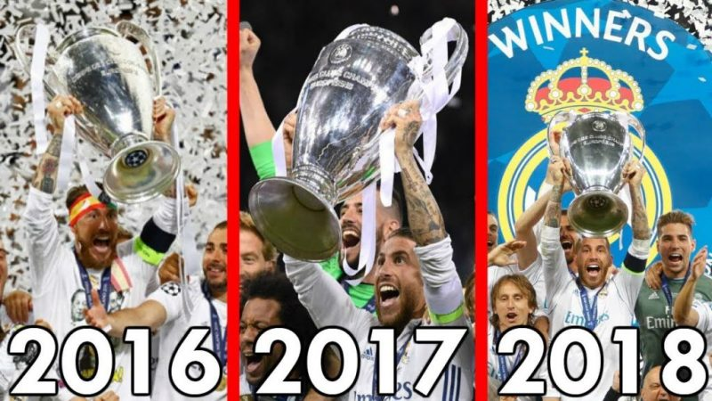

HISTORIA
El Real Madrid es uno de los clubes de fútbol más exitosos e icónicos del mundo,
con una historia llena de momentos inolvidables y jugadores legendarios.
Desde su fundación en 1902 hasta la actualidad, el Real Madrid ha sido un líder en el mundo del fútbol,
ganando múltiples títulos y creando un legado que trasciende el deporte. En este artículo,
exploraremos la h istoria del Real Madrid,
desde sus humildes orígenes hasta su lugar como una leyenda en el fútbol mundial.
Orígenes
El Real Madrid fue fundado en 1902 por un grupo de estudiantes universitarios y profesionales de Madrid,
bajo el nombre de «Madrid Football Club».
El equipo cambió su nombre a «Real Madrid» en 1920 después de recibir el patrocinio del rey Alfonso XIII,
lo que les permitió agregar el título «Real», que significa «Real» en español.
Era 50s, "Era de las 5 copas de Europa"
En la década de 1950,
el Real Madrid vivió su época dorada,
liderado por el mítico jugador Alfredo Di Stefano.
El equipo ganó cinco Copas de Europa consecutivas,
un récord que aún no ha sido superado.
En esa época, el Real Madrid también ganó varias Ligas españolas y Copas del Rey.
La Era Galactica
En la década de 2000, el Real Madrid volvió a dominar el fútbol mundial con la llegada del presidente Florentino Pérez
y la contratación de algunos de los jugadores más caros y exitosos del mundo,
incluyendo a Zinedine Zidane, David Beckham, Ronaldo y más tarde Cristiano Ronaldo.
Este equipo de estrellas fue conocido como «Los Galácticos» y ganaron múltiples títulos,
incluyendo dos Copas de Europa en 2002 y 2014.

Era titulos de Liga y Champions League
En la década de 2010, el Real Madrid ganó una serie de títulos importantes,
liderado por el entrenador Zinedine Zidane.
El equipo ganó cuatro Ligas de Campeones de la UEFA en cinco años,
incluyendo tres consecutivas de 2016 a 2018.
También ganaron cuatro Ligas españolas y varias Copas del Rey y Supercopas de España.

Volver al principio
Real Madrid CF.
PALMARES
Titulos Nacionales
El Real Madrid suma un total de 70 trofeos españoles divididos entre Ligas, Copas del Rey, Supercopas, Copa de la Liga y Copa Eva Duarte.
- Liga de España - 35
- Copa del Rey - 20
- Supercopas de España - 13
- Copa de la Liga - 1
- Copa Eva Duarte - 1
Titulos Internacionales
Dentro de los títulos internacionales del Real Madrid sobresale sin lugar a dudas el hecho de haber obtenido un total de 14 copas europeas, pero el club también se destaca por ser el que más veces obtuvo el campeonato del Mundo con ocho conquistas al sumar la obtenida ante Al Hilal.
- Copa de Europa / Champions League - 14
- Copa Intercontinental / Mundial de Clubes - 8
- Supercopa de Europa - 5
- Copa UEFA - 2
- Copa Latina - 2
- Copa Iberoamericana - 1
Volver al principio